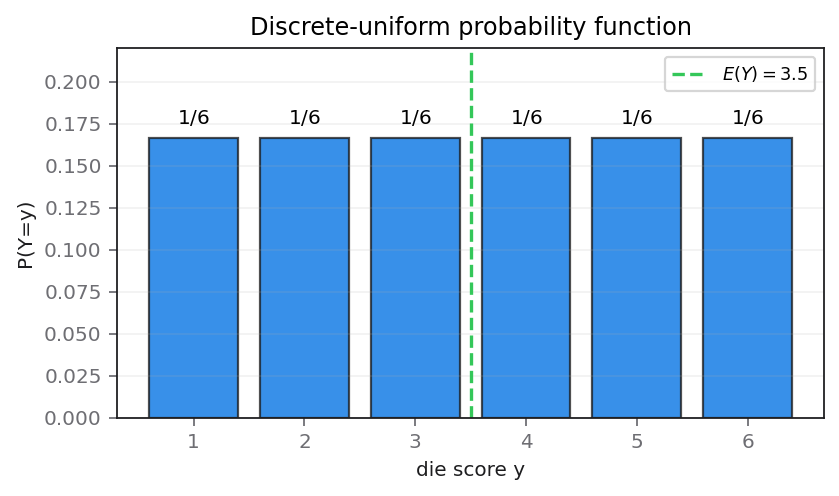

A fair 6-sided die is rolled. The random variable $Y$ represents the score on the uppermost face.
(a) Write down the probability function of $Y$ (2)
(b) State the name of the distribution of $Y$ (1)
(c) Find $E(4Y+3)$ (3)
Status: reviewed as fully correct; no prompting was required.
[6 marks: (a)2, (b)1, (c)3]
The strategy is to translate fairness and the six possible face scores into a probability function that states both the common probability and its support. A probability function is incomplete if it gives only $1/6$ without saying which values of $y$ are possible.
A fair die makes the six outcomes equally likely, and $Y$ is defined as the uppermost score. Therefore its support is the discrete set $\{1,2,3,4,5,6\}$, not an interval of real numbers. Equal probability mass must sum to one across these six points.
A complete form is $P(Y=y)=1/6$ for $y=1,2,3,4,5,6$, and $P(Y=y)=0$ otherwise. Equivalently, a table may list each supported $y$ with mass $1/6$. The support statement earns the distinct distribution-detail mark.
The lesson review explicitly described the whole question as fully correct. No personal mistake label is justified. A neutral common trap is writing only ‘$1/6$’ and omitting the values 1 through 6, which makes the function non-standalone.
The setup stops with mass 1/6 on each integer 1 through 6 and zero elsewhere. Transfer by giving both probability and exact support, then checking total mass and impossible outcomes before naming a distribution.
There are six equiprobable faces, so $$P(Y=y)=\frac16,\qquad y\in\{1,2,3,4,5,6\}.$$ The total mass is $6\times(1/6)=1$. Values such as $2.5$, 0, or 7 are impossible and have probability zero. Thus the boxed probability function includes both height and location of every probability bar.

Assign mass only to the six integer faces. The difficult transition is specifying the support as a discrete set; writing 1≤y≤6 without ‘integer’ can suggest a continuous interval and leaves the probability function ambiguous. The lesson was reviewed as fully correct, so no student mistake is evidenced; omission of the support is only a neutral exam risk. Check normalisation by six times one-sixth equals one and verify impossible values such as 0, 2.5 and 7 receive zero. The stopping point is P(Y=y)=1/6 for y in {1,…,6}, zero otherwise. Transfer by stating both mass and support whenever a probability function is requested, then checking non-negativity and total probability.
Name the distribution by combining its discrete finite support with equal probability at every supported value. Use the full phrase ‘discrete uniform distribution’ so it cannot be confused with the continuous uniform model.
Uniformity follows from the die being fair: each possible score has the same mass. Discreteness follows because $Y$ can take only six isolated integer values. Both properties are visible in the probability function from part (a), so the model name follows directly.
A discrete uniform distribution on $\{1,\ldots,6\}$ has $P(Y=y)=1/6$ for each supported integer. This is different from a continuous uniform density, where probabilities come from interval lengths and any single exact point has probability zero.
The lesson evidence says this part was fully correct, so the diagnostic remains neutral. The likely exam trap is omitting ‘discrete’, which changes the model class even though the word ‘uniform’ is present.
The classification can be checked against two independent source words. ‘6-sided’ supplies a finite six-point support, making the model discrete; ‘fair’ supplies equal masses, making it uniform. Neither property alone is enough: an unfair die remains discrete but not uniform, while a continuous uniform variable has equal density over an interval rather than six atoms.
The classification endpoint is discrete uniform on {1,2,3,4,5,6}. Transfer by deriving names from support type and equality pattern, verifying that the proposed model regenerates the source probability function.
From part (a), all six possible values have equal mass and no other values are possible. Therefore $$\boxed{Y\text{ has a discrete uniform distribution on }\{1,2,3,4,5,6\}}.$$ The word ‘discrete’ is essential; ‘normal’ and ‘binomial’ describe different support and probability structures.
Match two source properties to the model name: finitely many isolated scores make it discrete, and fairness makes all six masses equal, hence uniform. The difficult transition is retaining the qualifier ‘discrete’; a continuous uniform model assigns probability through interval length and zero mass to a single point. Lesson evidence says the response was fully correct, so no personal diagnosis is appropriate. Check the name by reconstructing its defining probability function—six points each carrying 1/6—and reject binomial because the score is not a success count. The answer stops at ‘discrete uniform distribution on {1,2,3,4,5,6}’. Transfer by deriving a distribution label from support type and mass pattern rather than from the visual appearance of equal bars alone.
Find the mean of the die score and then use linearity of expectation for the transformed variable. This avoids constructing a second full probability table, while still showing enough intermediate work to justify the transformation.
Expectation is linear for any random variable: multiplying $Y$ by 4 multiplies its mean by 4, and adding 3 adds 3 to the mean. The six scores are equally likely, so $E(Y)$ can be found by the weighted sum or by symmetry of the endpoints.
Use $E(Y)=\sum yP(Y=y)$ and $E(aY+b)=aE(Y)+b$. For a discrete uniform distribution on $1,\ldots,6$, the endpoint average also gives $E(Y)=(1+6)/2=3.5$.
The lesson evidence says the entire question was done perfectly, so no learner error is introduced. The neutral common trap is treating $E(4Y+3)$ as $4E(Y)$ and forgetting the constant, or calculating $E(Y)$ as $1/6$.
Pairing opposite faces gives three sums of seven: $(1,6)$, $(2,5)$ and $(3,4)$. Equal masses make each pair centre at 3.5, independently confirming $E(Y)=21/6$. Under the transformation $4Y+3$, the endpoints become 7 and 27, whose midpoint 17 agrees with linearity. These two symmetries check both stages without a second probability table.
The route stops at E(4Y+3)=17 after E(Y)=3.5. Transfer by applying linearity to values, not probabilities, and checking the answer against the midpoint of the transformed support.
Compute $$E(Y)=\frac{1+2+3+4+5+6}{6}=\frac{21}{6}=3.5.$$ Then $$E(4Y+3)=4E(Y)+3=4(3.5)+3=14+3=\boxed{17}.$$ As a direct check, the transformed values are 7, 11, 15, 19, 23, 27, whose average is $(7+27)/2=17$.
First average the six equally likely scores, then apply linearity to the transformed variable. The difficult transition is adding the constant after scaling the mean: probabilities stay at one-sixth, while values become 4y+3. The lesson evidence says the question was completed correctly, so forgetting +3 is only a neutral warning. Check by a second route: transformed endpoints are 7 and 27 and the six transformed values are equally spaced, so their midpoint is 17. The formal chain E(Y)=21/6=3.5 and E(4Y+3)=4(3.5)+3 stops at 17. For transfer, use E(aX+b)=aE(X)+b, then compare with the transformed range or symmetry instead of rebuilding an unnecessary table.